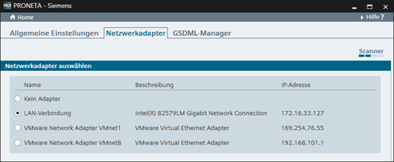

Im „Einstellungen”-Fenster sind drei verschiedene Registerkarten verfügbar:
Diese Modi werden verwendet, um die betrieblichen Details von PRONETA Basic anzupassen.
Hier können Sie den für PRONETA Basic verwendeten Netzwerkadapter ändern.

Es wird eine Liste von auf Ihrem PC erkannten Ethernet-Adaptern angezeigt.
Wählen Sie aus dieser Liste den geeigneten Adapter aus. Wird kein Adapter ausgewählt, können Sie in PRONETA Basic nur die Offline-Funktionalität nutzen (Offline-Modus und Vergleichsmodus zum Vergleich zweier Offline-Topologien).